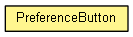

org.eclipse.net4j.util.ui.widgets
Class PreferenceButton
java.lang.Object
 org.eclipse.net4j.util.ui.widgets.PreferenceButton
org.eclipse.net4j.util.ui.widgets.PreferenceButton
- public class PreferenceButton
- extends Object

| Methods inherited from class java.lang.Object |
clone, equals, finalize, getClass, hashCode, notify, notifyAll, toString, wait, wait, wait |
PreferenceButton
public PreferenceButton(Composite parent,
int style,
String text,
OMPreference<Boolean> preference)
getPreference
public OMPreference<Boolean> getPreference()
getButton
public Button getButton()
getAlignment
public int getAlignment()
getImage
public Image getImage()
getSelection
public boolean getSelection(boolean setPreference)
getSelection
public boolean getSelection()
getText
public String getText()
setAlignment
public void setAlignment(int alignment)
setImage
public void setImage(Image image)
setSelection
public void setSelection(boolean selected)
setText
public void setText(String string)
setFocus
public boolean setFocus()
addListener
public void addListener(int evenType,
Listener listener)
- Since:
- 3.0
removeListener
public void removeListener(int evenType,
Listener listener)
- Since:
- 3.0
Copyright (c) 2011, 2012 Eike Stepper (Berlin, Germany) and others.